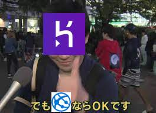
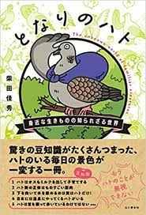

僕ね、このアプリ初公開のときに、herokuさま、あの、あれなんすよ、あのー、（本アプリの）ホストサーバーにしていたんですよ。
マジでショックです！
まぁでも代替サービスあるなら……OKです！（微笑み、力強く親指を立てる）
(一応heroku版もアクセスできます)
A8.netというサイトで手軽に広告をWebアプリに貼り付け、収益化することができます。私は試しにＧＭＯインターネット株式会社様のお名前.comというサイトの広告を結果画面に貼り付けてみました。
以下の広告をクリックすると一回あたり6円の広告収入が私に入ります。でも、口座振り込み手数料が約500円なので、儲かる気配はありませんね...
本アプリのpigeonsページにある種々のハトの説明は、主に以下の「となりのハト」という書籍から勉強したことを紹介しています。ハト好きにはたまらない一冊ですので、一度是非お読みください！
>購入はこちら
このページに共有ボタンのBad UI具合に腹を立てて飛んできた方もいるでしょうから、まずは言い訳させてください。スマホアプリに何気なくある例のSNS共有ボタンでは、当たり前のようにプレイ中の録画やリザルト画面のスクリーンショットが共有できたりします。しかし、それはWebサイトにおいては当たり前ではないのです。 Webサイトにおいては共有ボタンの設置とは別に「OGP」という特別な設定をする必要があります。これは共有するときにデフォルトで設定されているツイートの文章やタグ等を指定できるものです。これを予め設定しておくことで、対象の宣伝効果を高めることができるのです。
「じゃあそれを適切に設定して、出力結果の画像をツイートに付与したらいいんじゃないの？」という声が今にも聞こえてきますが、そんなこと出来るならとっくにやってるに決まってんだろ。出来ねえんだよ。画像の設定がよ！！！！！ 実際に共有してくれた方や試しに共有ボタンを押した人なら分かると思いますが、例の画像カードは出てきてると思います。これはOGPのimage設定でWebアプリ内にある画像のURLを指定することで、そのアクセス先にある画像をカード内に表示できるというものです。…それが設定の限界です。
はい、また「じゃあそれを出力結果の画像にすればいいだけだよね？」とか聞こえてきますが、はっきり言って「ｵﾊｰﾄ🐦」としか言えねぇわ。これは『既存のURLでアクセスできる画像を内容だけ更新すると、専用のサイトでリフレッシュしないと素早く表示を切り替えられない』という史上最悪の仕様によって起こる悲劇です。つまり、頻繁に入れ替わるはずの出力結果をカードに表示させることは不可能という訳です！笑
なので、皆さんは私を憐んで、このアプリを出力結果付きで共有してくれるとありがたいです。
このWebアプリに搭載している人工知能は、「YOLOv5」と呼ばれる深層学習モデルの一つです。深層学習とは、人間の神経細胞の仕組みを再現した多層ニューラルネットワークを用いた機械学習の手法の1つです。現在この技術は様々な分野で応用されていますが、その最たる例が「画像認識」です。このWebアプリもその応用例の一つです。
今回用いたYOLOv5というモデルはフリーで配布しており、権利の設定的にかなり自由に使えます(GNU General Public License v3.0)。また、自前のデータで学習させることが非常に簡単で、性能もまずまず良いです。画像を読み込んで検出対象が一定の確率で存在すると思われる箇所が特定された場合、画像に表示されます。ここでの「一定の確率」は自分が指定でき、今回は30%にしてあります。つまり、30%の確率でハトがいる場所があった場合、四角で囲んで教えてくれるという訳です。画像認識でAI使ってみたいなとか思っている人は、最初に触るのにうってつけだと思います。
上記の章で説明した通り、この人工知能は自前の画像データを既存モデルに食わせて作っています。そのデータをどこから取ってきたのかという話ですが、一つは自分が撮ってきたもの、もう一つはTwitterから取ってきたものです。
後者について、Webページ等からデータを自動的に取ってくることを「スクレイピング」と言います。今回はTwitterからスクレイピングしてきたのですが、Twitterではスクレイピングを禁止しています。…別に私が違法を働いたということではなく、公式のAPIを使って合法で取ってきた画像を用いています。但し、公式APIだと直近7日間のツイートまでしか参照できず、シラコバトやカラスバトといったやや珍しいハトさんのデータはは少ししか取れませんでした。なので、結局手動でツイートを検索して取ってきたものも多くあります。
また、スクレイピング自体は決して違法ではないのですが、グレーに近い行為だと言われています。Webサイトの利用規約やrobots.txtで明示的に禁止されている(あるいはそれに準ずる行為が禁止されている)場合、キッパリ諦めましょう。詳しくはこちらのリンクを参照してください。
次に、ネットから取ってきた画像を勝手に学習に使っていいのかについてですが、こちらは全く問題ありません！日本では著作権法によって情報の複製が禁じられているのですが、「私的利用」もしくは「情報解析」目的であれば例外としてこれが認められます。今回はまさにこの2つを満たしているので、特に心配いらないという訳です。
皆さんも適切にスクレイピングの技術を扱い、充実した機械学習ライフを送りましょう！
1. 自前のデータを用意し、検出対象に印をつける作業(アノテーション)を行う。
2. データの前処理が終わったら、それをYolov5にブチ込んで学習させる。
3. Webアプリのフロントエンド(あなた方に見えているこの画面)をHTML/CSS/JavaScriptで大雑把に構築していく。
4. 一旦herokuを使ってインターネット上に公開し、動作するか確かめる。
5. Webアプリのバックエンド(YOLOv5の予測処理等)をPythonで実装する。(←マジで一番キツかった。二度とやりたくない。)
6. 細かいところをHTML/CSS/JavaScriptで装飾していく。
7. herokuの無料プランが無くなってしまうので、泣く泣くAzure App Serviceに乗り換える。
810. 人類を救う🐦